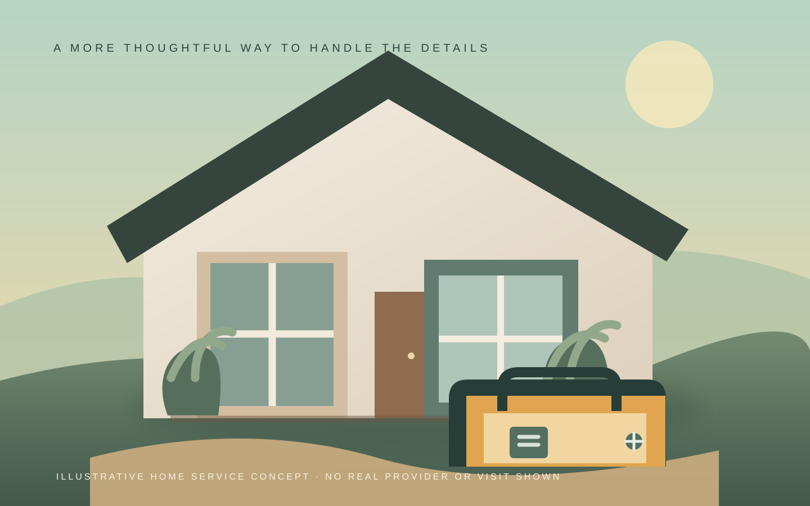

Start with the work
Let someone explain the room, repair or upkeep they have in mind, with enough context to start a useful conversation.
A home runs on the little things
From the first description to the final follow-up, the details deserve a calm place to land.
See the day from your phone
Clear before the first visit
Useful home care begins with knowing what a person needs, where the work is, and what should happen next. A thoughtful website can make those first details easier to share and easier to review.
Let someone explain the room, repair or upkeep they have in mind, with enough context to start a useful conversation.
Keep the location and request details together, so the next reply can be focused and clear.
Give every inquiry a visible next step, from reviewing the details to preparing a follow-up.
A quieter workday
Open the example request, prepare a reply, adjust its status and refine the instructions a visitor would see. The flow puts the useful details close at hand.
RequestWhat needs attention and where
ReplyA considered message, ready for review
Next stepA status you can understand at a glance
Example inquiry · received today
THE REQUEST
“A cabinet door is loose and one kitchen drawer sticks. Could someone take a look?”
Location: Sample address area, no street address supplied
Timing: Customer asks about a future weekday
Need: Cabinet hinge check and drawer inspection
Needs review
Local practice: changes stay on this page until reset or reload. Nothing is sent or published.